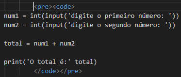
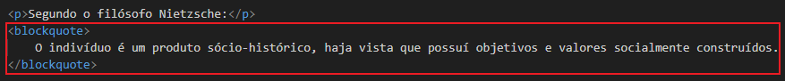
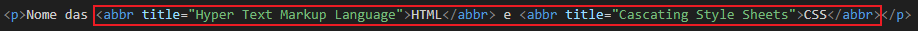

Podemos escrever um código de qualquer liguagem no site usando as tags
"pre" e logo em seguida "code". Dessa maneira, o código é exibido em fonte
monoespaçada:
num1 = int(input('digite o primeiro número: '))
num2 = int(input('digite o segundo número: '))
total = num1 + num2
print('O total é:' total)
Exemplo:
Como diria um pai de um professor: O computador é um burro muito rápido.
Tag utilizada ↓
Segundo o filósofo Nietzsche:
O indivíduo é um produto sócio-histórico, haja vista que possuí objetivos e valores socialmente construídos.
Tag utilizada ↓
Nome das HTML e CSS
Tag utilizada ↓
Para saber mais acesse o PDF de citações e códigos